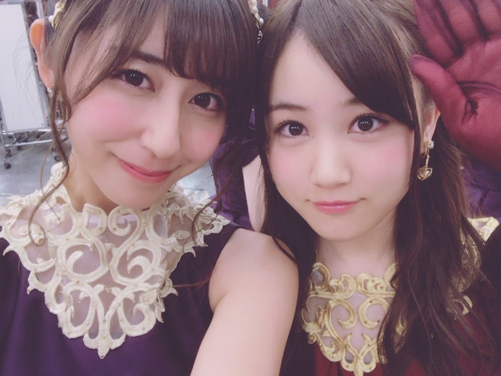
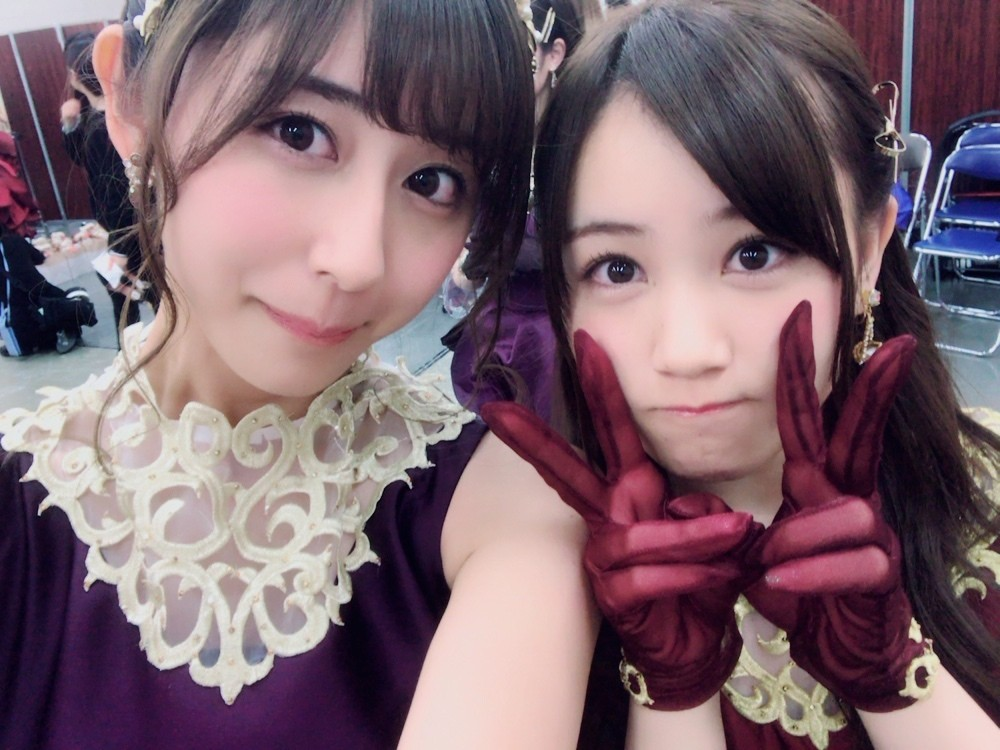
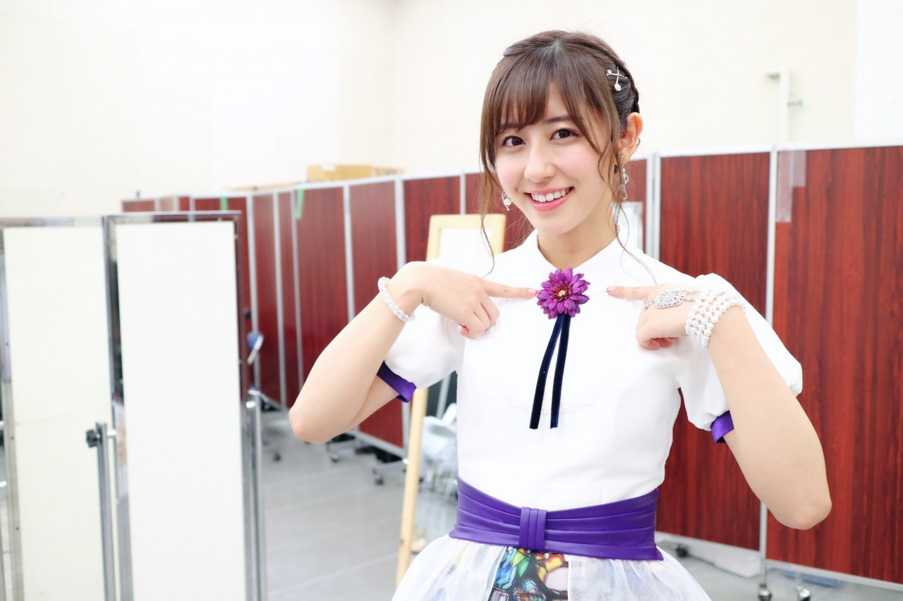
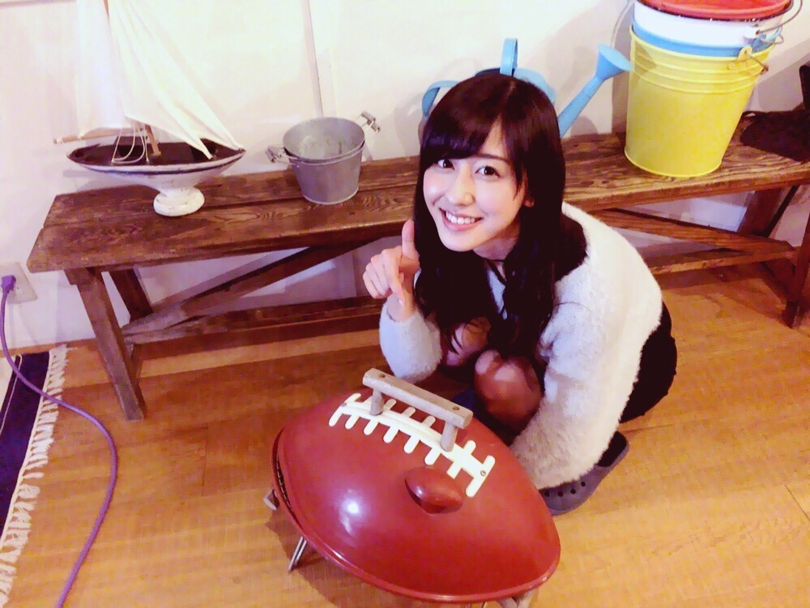
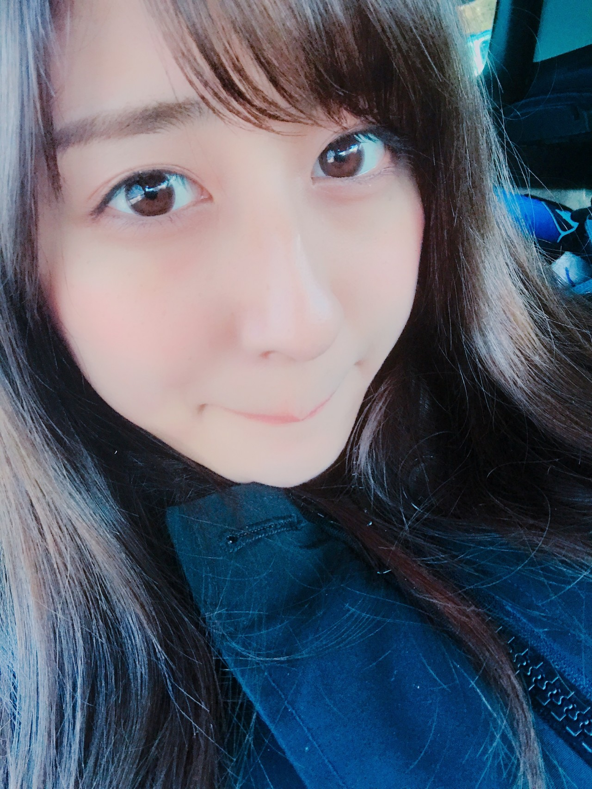

| 2017/01 03 Tue | 斎藤ちはる スポーツについて語る。 |
ちはるーむへようこそ。


みなみは幾つになっても可愛い！
入った時は2人とも中学生だったのに
もうすぐ20歳と19歳だよ〜(> <)
時が経つのは早いね。
お正月は色々なスポーツが観れて
私としてはとても楽しい季節。
2日3日は箱根駅伝！
昔から見ているので箱根駅伝を見ないと
今年が始まらない気もしちゃいます。
それくらいに私のお正月の一部です。
どこの大学が1位になるんだろう！？
というワクワクもありますが、
私が一番気になるのはシード権争いと
繰り上げスタート。
たった数秒しか変わらなくても
10位と11位では来年の箱根駅伝に
出られるか出られないかが決まってしまう。
その一年間、箱根駅伝での走りを練習をするか
箱根駅伝に出るための練習をするかで
全然コンディションや気持ちも違う。
そこのドラマにいつも胸打たれます。
そしていつも泣いてしまうのは
タスキが繋がらなくて
繰り上げスタートになってしまう所。
タスキを繋げるためにみんなで走ったのに
繋がらず、中継所に帰ってきた走者の
気持ちを考えたら涙が止まらない。
そして前走者をずっと待っていたのに
来ず、ピストルでスタートする所。
全員で作る箱根駅伝だからこそ
タスキには大きな意味がある。
本当に沢山のドラマがあっていつも心打たれます。
特に今年は明治のタスキが繋がらなくて
涙が溢れちゃいました。
母校というのもありますが
67回大会以来26大会ぶり、というのが
大きかったです。
予選会から大変だったと思いますが
皆さんお疲れ様でした...！
そして箱根駅伝の選手の皆さん、
サポーターの皆さん、お疲れ様でした。
また来年新たなドラマを楽しみにしています！

そして本日行われたライスボウル。
社会人1位vs学生1位が戦う、
アメリカンフットボール日本一を決める大会。
今年は関西学院大学vs富士通フロンティアーズの戦いでした。
関西学院大学は本当によくランが通っていました！
ランニングバックが横に流れず
真ん中をちゃんと攻めて走ることが出来ていて
度胸があって素敵だなと思ったのですが、
それと同じくらいに凄かったのが
オフェンスライン。
ランニングバックが走る道を空けるために
しっかりとブロックしていて
かっこいいなと思いました！
富士通フロンティアーズは
こんなパスが取れるんだ！というくらいに
しっかりとパスを取るチームでした。
短いパスも難しいパスも
50ydを越えるロングパスも必ず取る。
そしてキャメロン選手は
取りやすそうなところにパスをしていて
絶好調な感じがしました。
ロングパスをしっかりと取れる
ワイドレシーバーの中村クラーク選手は
以前私が表紙を飾らせていただいた
「アメリカンフットボールマガジン」
という雑誌でご一緒させて頂いていたので
何処か親近感が湧いていました。
本当に素敵な試合で
見ていて楽しかったです！
やはりアメフトはいいなぁ(﹡ˆ ˆ﹡)
両選手の皆さん、サポーターの皆さん、
お疲れ様でした。

どこかのスタジオにあった
アメフトのボールと一緒に◎
-----------------------------------------♡
♬ ChihaMusic
「遥か」GReeeeNさん
寒いこの季節に聴きたくなる、
切ないこの曲。
歌詞が本当にとっても良い。
独り暮らししている方には
余計に沁みると思います。
"気付けばいつも誰かに支えられ
ここまで歩いた
だから今度は自分が
誰かを支えられるように"
大きくなってわかる両親の偉大さ。
1人になってわかる友達の心強さ。
沢山の人に支えられた分、
次は自分が誰かを支えたいと思う。

今日は物凄く語ってしまいました...
大好きなスポーツの事になると
言いたい事が山程出てきちゃう...！
それだけ好きって事です。
昨日のブログに、沢山の方が
これ良いんじゃない？と提案してくださってくれましたヽ(；；)丿
ありがとうございます！！
しっかりと考えて決まりましたら
またブログにて報告させていただきます◎
待っていてください( ¨̮ )
おやすみ〜
斎藤ちはる